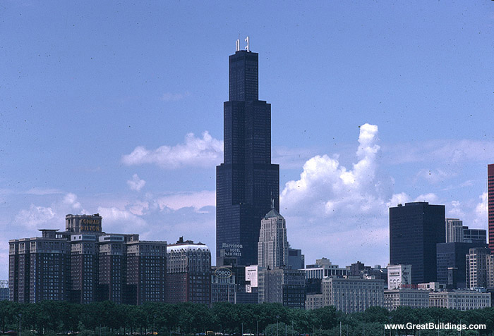
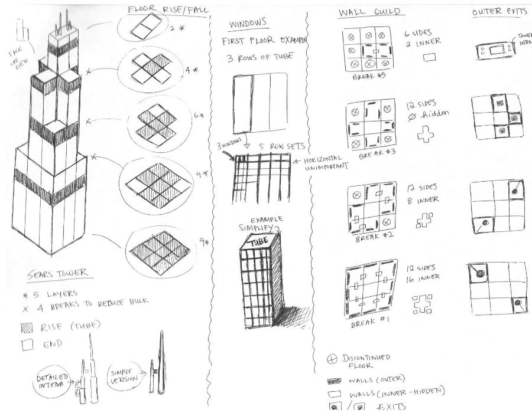
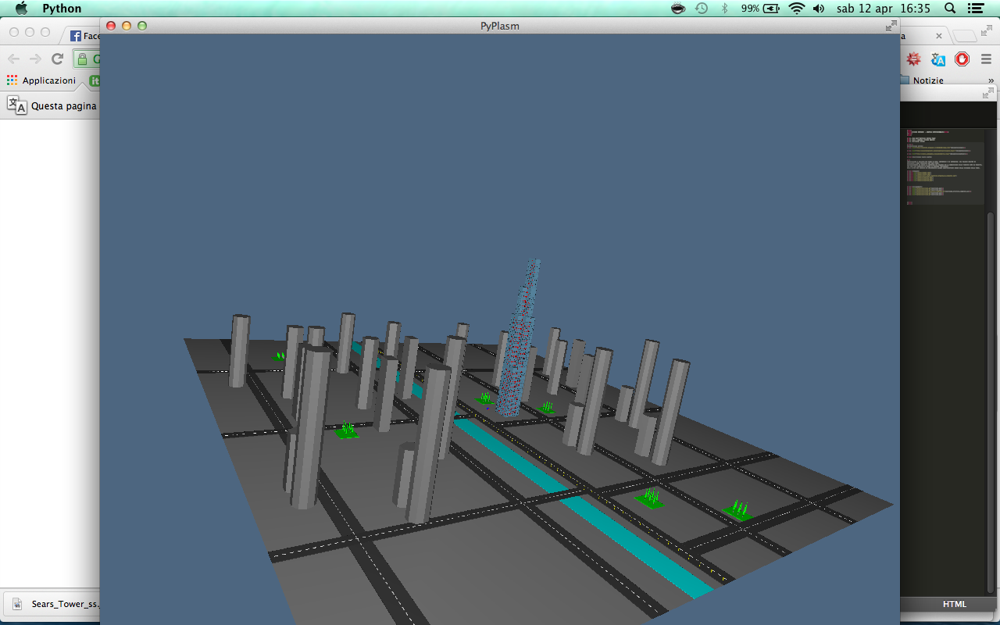
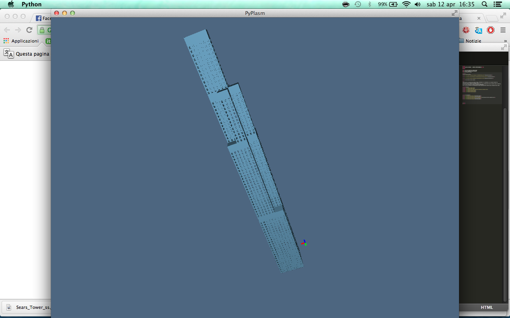
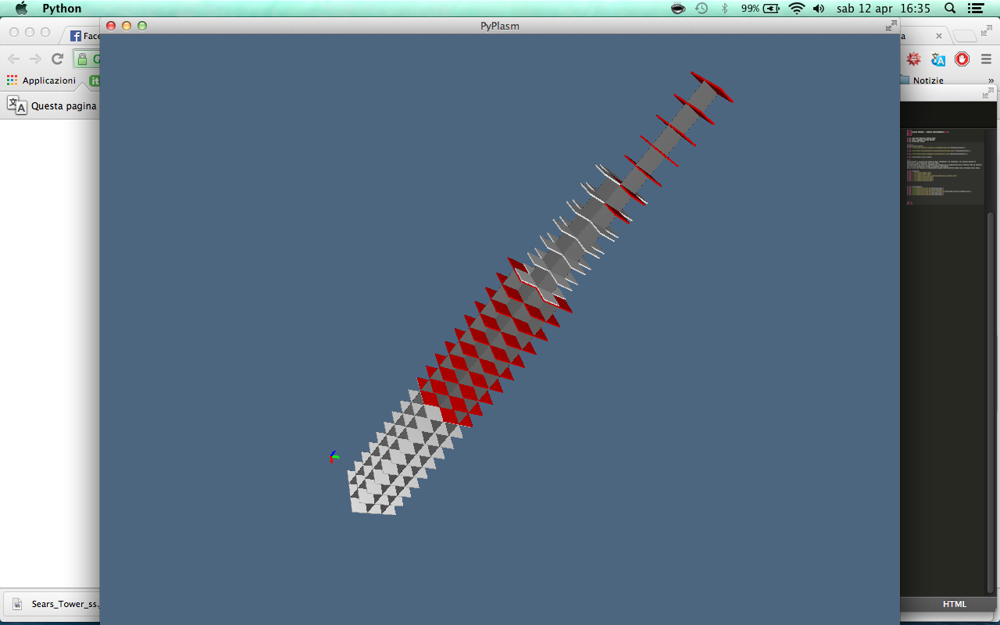
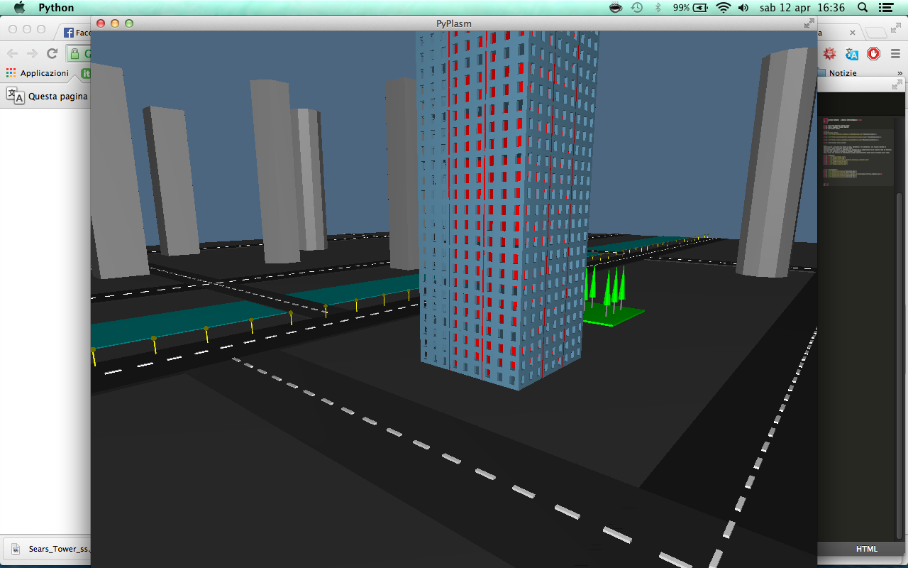

1. Nome dell'edificio: Willis Tower
2. Nome e cognome: Tiziano Sperati
3. Matricola: 417136
Documentazione online:
Documentazione1
Documentazione2
Documentazione3(en)
Descrizione lavoro svolto:
PROGETTAZIONE E SVILUPPO DEI PIANI DI BASE, INTERMEDIE E DI COPERATURA DEL PALAZZO INOLTRE HO REALIZZATO I MURI PRINCIPALI DEI VARI PIANI.
SUCCESSIVAMENTE HO CREATO LA COPERTURA DEL PALAZZO CON LA SUDDIVISIONE DELLE FINESTRE COME DA PROGETTO, PER FARE TALE ESERCIZIO HO USATO LA FUNZIONE "DIFFERENCE"
NEGLI ULTIMI DUE ESERCIZI HO IMPLEMENTATO ALCUNE CARATTERISTICHE URBANE NELLA VICINANZA DELLA TORRE.
Immagini:






Collegamenti:
exercise1.py
exercise2.py
exercise2_struttura_completa.py
exercise3.py
exercise4.py